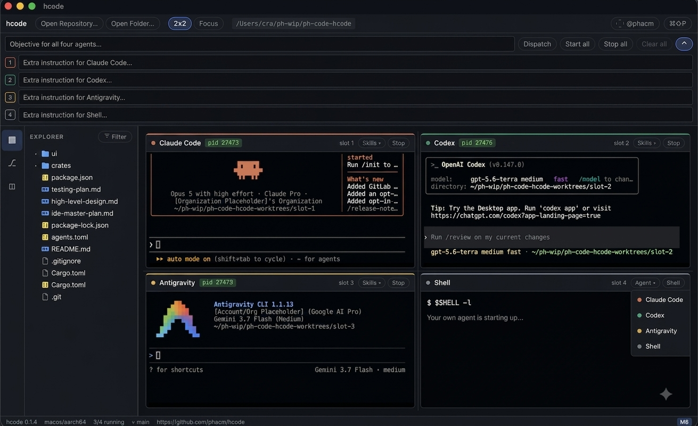

Spec Owner
ClaudeWrites the contract and freezes the scope.
hcode
Each stage has one job, one accountable role, and one handoff. The sequence makes disagreement visible before it becomes an expensive bug—and keeps the owner in command.
Writes the contract and freezes the scope.
Challenges ambiguity before code exists.
Writes tests blind to the implementation.
Builds against the frozen spec and tests.
Reviews the diff against the contract.
Runs checks in a controlled environment.
Measures the repository and emits the merge verdict.
After L2 review, the contract is versioned. L3 writes against that frozen artifact; later roles may surface defects, but they do not silently rewrite the target.

Real terminals, a resizable usage panel, source control, and a visible integration queue—inside the hcode desktop app.
hcode lets one engineer run several bounded roles without pretending to build a miniature organization. One human sets the product judgment, sees the evidence, and decides what ships; isolated agent workspaces keep the supporting work legible and contained.
↳ One accountable owner. Multiple constrained contributors.A dedicated Source Control & Conflicts view shows every slot’s changed files, side-by-side diffs, branch state, and cross-worktree collision alerts. Review, commit, merge, squash, cherry-pick, or resync from base without losing the thread of the work.
↳ Preview the merge. Then make the call.Assign agents distinct, falsifiable roles instead of asking one model to do everything. Claude owns the specification and reviews the diff; Codex pressure-tests the spec and writes tests before code; Antigravity implements and runs the execution harness. A deterministic gate—not a model—provides merge evidence for the human owner.
↳ One author, a different checker, and a repeatable gate at every handoff.See approval requests from every terminal and answer y or n without hunting for the right pane.
Compare changes in Monaco, flag overlapping edits, and preview integration before touching the base branch.
Move from spec to tests, implementation, review, execution, and a deterministic merge gate—with one human accountable and a distinct role at each stage.
hcode is a local desktop IDE built with Tauri, Rust, React, and Vite. Run Claude, Codex, Grok, Agy, or a shell in a slot; bring your own subscriptions and credentials. Find the Mac download and project files on GitHub.
Download hcode on GitHubThe role that makes the claim cannot be the only role that validates it.
Tests are written before—and without seeing—the implementation.
The final merge decision belongs to a deterministic gate and the human operator.
Specs, tests, diffs, results, and verdicts travel as inspectable artifacts.
Evidence comes from the actual checkout, not public benchmark scores.
One-person engineering means a single human retains product context, accountability, and final judgment while agents specialize around the work. The goal is not to simulate a large team; it is to give a careful solo builder a disciplined SDLC with visible evidence at every handoff. Role separation reduces correlated mistakes; it does not make generated code correct. Extra handoffs cost time and tokens, deterministic checks can only measure what they encode, and the human still decides whether the evidence is sufficient for the product’s risk.
Tabs start processes, but they do not turn solo work into a disciplined lifecycle. They do not create isolated worktrees, surface overlapping edits, preserve a review trail, or stop an integration queue at the first conflict. hcode does.
hcode watches all four terminal streams. When an approval prompt appears, the Permission Review Bar identifies the slot and agent, then lets you approve, deny, approve all, or focus that terminal with a single click.
hcode gives a solo owner a gated lifecycle: Claude writes and freezes the specification, Codex challenges ambiguity and writes tests before implementation, Antigravity builds and executes the checks, then a deterministic script emits merge evidence. The human reviews the evidence; the artifact author never declares their own work passed.
Each slot can commit its work—including new files—before merging. hcode previews merge conflicts without changing the checkout, and the ordered integration queue stops at the first conflict so later branches remain untouched.
No. hcode is a local desktop application. Your repository, credentials, terminals, and installed coding CLIs remain on your machine. macOS is the reference platform, with Ubuntu support planned alongside it.